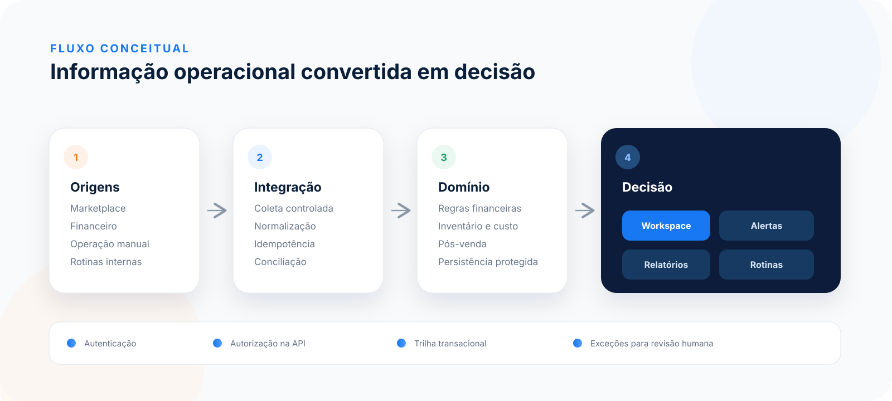

ESTUDO DE CASO · SOFTWARE PROPRIETÁRIO
A operação inteira antes da próxima decisão.
O CliqueShop ERP reúne finanças, estoque, marketplace, tarefas e pós-venda em um workspace desenhado para a rotina de e-commerce.
Esta vitrine usa somente dados fictícios. Código-fonte, integrações e dados do produto de produção permanecem privados.
2 decisões comerciais
3 tarefas de hoje
6 rotinas concluídas
POR QUE EXISTE
Uma visão operacional, sem planilhas paralelas.
Vendas, liberações financeiras, custos, anúncios, estoque distribuído, devoluções e tarefas chegam por fontes diferentes. O ERP normaliza esses eventos e os coloca no contexto da decisão que precisa ser tomada.
MAPA FUNCIONAL
Tudo o que compõe o ERP.
Amplitude organizada em seis áreas; detalhes aparecem somente quando ajudam a entender o fluxo.
Início
Prioridades, indicadores, liberações, notificações e últimas movimentações.
Operação
Tarefas, agenda, checklists, recorrências, alertas, Telegram, advisor, cadastros e acessos.
Financeiro
Caixa, DRE, conciliação, lançamentos recorrentes, venda direta e relatórios.
Estoque
Produtos, fornecedores, compras, lotes, custo médio, trânsito e distribuição.
Marketplace
Vendas, anúncios, promoções, atacado, Ads, ranking, contas e viabilidade.
Pós-venda
Reclamações, devoluções, recuperação financeira, estoque e revisão humana.
TOUR DO PRODUTO
Explore as seis áreas.
Mock independente, responsivo e construído com fixtures sintéticas. Nenhuma ação acessa o ambiente real.
PRINCÍPIOS DO PRODUTO
Menos entrada. Mais contexto. Exceções visíveis.
Próxima ação primeiro
A interface destaca o que exige decisão em vez de expor toda a complexidade de uma vez.
Caixa e competência distintos
O produto modela os dois recortes em camadas separadas, com enquadramento sujeito à validação contábil aplicável.
Automação com limite
Nos cenários elegíveis cobertos, a reconciliação evita uma segunda entrada de estoque; incertezas continuam manuais.
ARQUITETURA
Da origem fragmentada à decisão contextual.
O diagrama é deliberadamente abstrato: comunica responsabilidade técnica sem expor endpoints, credenciais, topologia ou regras proprietárias.
- Credenciais permanecem no servidor.
- Autorização também é aplicada na API.
- Sincronizações usam controles de idempotência.
- Casos incertos não são encerrados automaticamente.

SOB O CAPÔ
Engenharia aplicada à operação real.
Detalhes suficientes para avaliar a solução; segredos de implementação permanecem no repositório privado.
Python + Django
Domínio transacional, autenticação, regras e integrações.
PostgreSQL
Persistência relacional e trilha consistente dos eventos.
JavaScript + CSS
Workspace responsivo com baixa carga cognitiva.
Containers + rotinas
Processos agendados, alertas e integrações por APIs das plataformas.
FRONTEIRA PÚBLICA
Portfólio público. Produto privado.
Este repositório contém somente o estudo de caso e o mock demonstrativo. Não contém banco, dumps, documentos operacionais, credenciais, código do ERP, contratos de API ou dados de clientes.